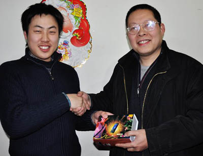

（上海消息通讯员：风云）1月31日，上海五子棋第11届“友情杯”邀请赛续战。黄宇峰在败者组连胜侯新元和王烨林，再次与顾炜遭遇。经过猜先，黄宇峰猜得先手，指定顾炜布局，后者应以长星，黄宇峰不交换变为疏星，顾炜再次下出在胜者组巧胜黄宇峰的变化，只是在第13手改变了选择，黄宇峰沉着应对，稳扎稳打，两人酣斗103手言和。此后的加时赛中，双方恶战瑞星百余手言和，于是出现了开赛以来首度第二次加赛快棋的场面。在第2局中，顾炜执黑在瑞星局中开出骗招，最终黄宇峰应对正确获胜，晋级决赛。
按照规定，胜者组出线选手只需获胜1局即可获得冠军，而败者组出线选手必须连胜2局方可夺冠，对此黄宇峰戏言：目前的情况如同打电子游戏，最后的老板命太多，闯关者难度很大。实战阶段，双方大战疏星，最终80多手言和。进入快棋赛，可能由于之前的连续闯关过于疲惫，黄宇峰一个疏忽，被张轶峰擒获。由此，整个比赛完满落下帷幕。张轶峰也获得了上海五子棋2010年第一个大赛冠军，这也是他自去年获得新人王头衔后的上海五子棋第2个主要赛事冠军。
最后，大赛裁判长黄民城和国内五子棋知名棋手、京沪两地五子棋界元老李洪斌、刘彤分别为前三名获得者颁奖。
赛事期间，葛凌峰、朱建锋、薛文曦、戈宇、郑蔚楠、李洁、张力军等棋手前来观摩。
上海五子棋委员会负责人、大赛裁判长黄民城（右）为冠军张轶峰（左）颁奖

(中华连珠）
［此帖子已被 小丸.net 在 2010-2-1 12:00:02 编辑过］